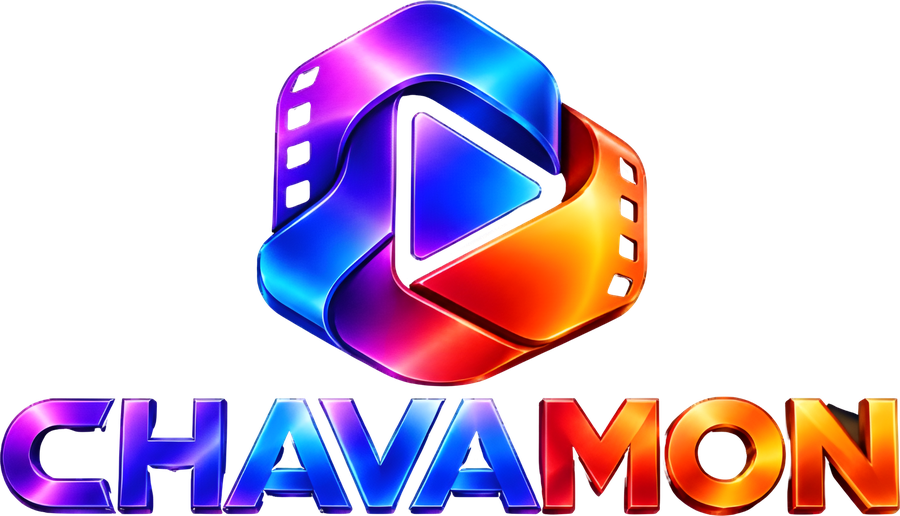
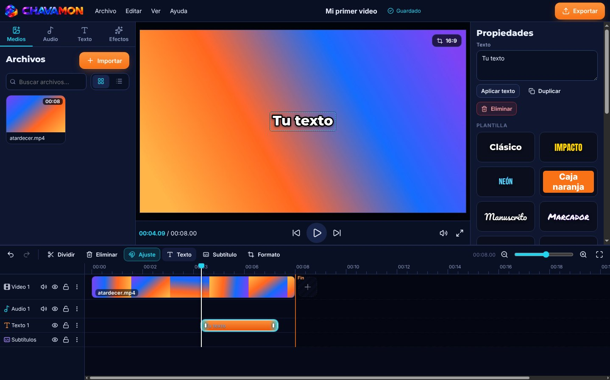
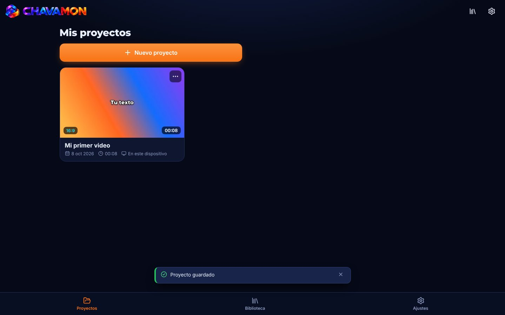
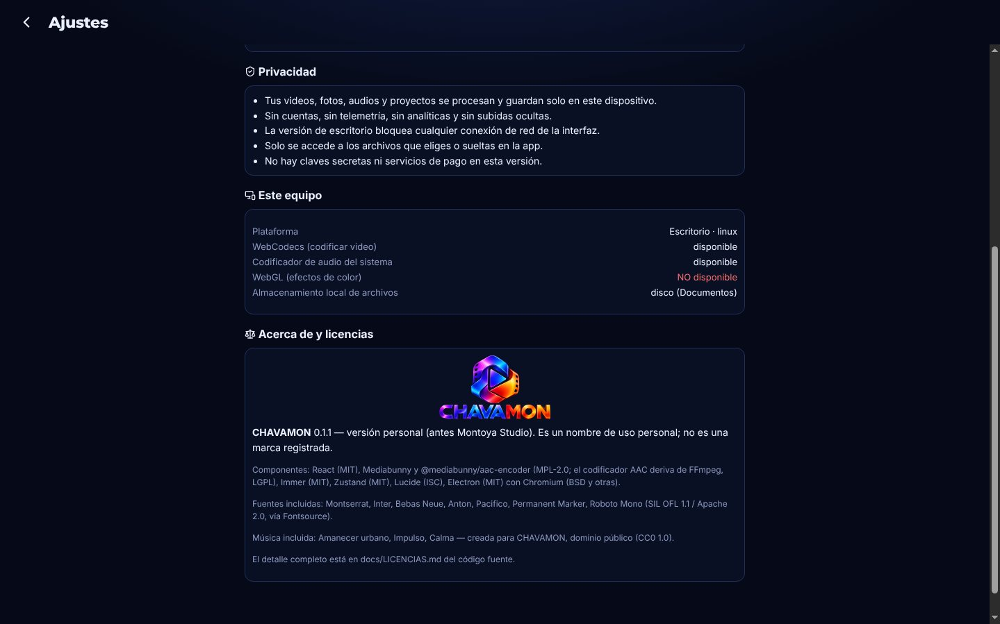

Edita tus videos en tu computadora. Sin cuentas, sin marca de agua y sin subir nada a internet.
Corta, agrega texto, música y subtítulos, y exporta en MP4 listo para YouTube, TikTok, Reels o Shorts.
Versión 0.1.1 · 107 MB · Windows 10 y 11 de 64 bits

Listo en cuatro pasos
Si ya tenías Montoya Studio, CHAVAMON lo reemplaza y conserva tus proyectos, tu biblioteca y tus ajustes.
Descarga
Pulsa Descargar para Windows. El archivo se llama CHAVAMON-0.1.1-windows-x64.exe.
Abre el instalador
Búscalo en tu carpeta Descargas y ábrelo con doble clic.
Aviso de Windows
Si aparece "Windows protegió su PC", elige Más información y luego Ejecutar de todas formas. Sale porque el instalador aún no tiene firma digital.
Empieza a editar
Abre CHAVAMON desde el escritorio o el menú Inicio y crea tu primer proyecto.
Lo que necesitas para tus videos, sin pagar suscripciones
Línea de tiempo
Pistas de video, audio, texto y subtítulos. Divide, elimina, oculta, silencia y bloquea pistas, con ajuste magnético.
Formatos para redes
Horizontal 16:9 para YouTube, vertical 9:16 para TikTok, Reels y Shorts, y cuadrado 1:1, con encuadre.
Exportar en MP4
De 720p a 4K, a 24, 25, 30 o 60 fps, con calidad normal, alta o máxima.
Texto con estilo
Plantillas como Clásico, Impacto, Neón o Manuscrito, con siete fuentes incluidas.
Velocidad y subtítulos
Velocidad del clip de 0.25x a 4x y subtítulos que puedes exportar como archivo SRT.
Guardado automático
Cada cambio se guarda con copia de respaldo. Si la app se cierra de golpe, recuperas tu proyecto.


Tus videos no salen de tu computadora
- Todo es local. Los videos, fotos, audios y proyectos se procesan y guardan en tu equipo.
- Sin cuentas ni telemetría. No hay registro, analíticas ni subidas ocultas.
- Sin red en el editor. La versión de escritorio bloquea cualquier conexión de la interfaz.
- Solo lo que eliges. La app abre únicamente los archivos que tú seleccionas o arrastras.
Huella SHA-256 del instalador
5b49580d4f3fe24e36afeac9208da2ffd59d1e13809d0f3846595b085ca355d1
En PowerShell, dentro de tu carpeta Descargas:
Get-FileHash .\CHAVAMON-0.1.1-windows-x64.exe -Algorithm SHA256Si el resultado es igual a la huella de arriba, el archivo llegó completo y sin cambios.